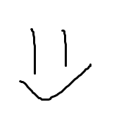

Noorem tarkvaraarendaja
Noorem tarkvaraarendaja1 põhitegevuseks on uute tarkvarade ja veebilahenduste loomine, testimine ning dokumenteerimine. Ta tegeleb tarkvara analüüsi, disaini, programmeerimise, testimise ja juurutamisega. Noorem tarkvaraarendaja töö eeldab analüütilist ja loovat tehnilist mõtlemist, pidevat kutsealast enesetäiendamist ning head meeskonnatöö oskust.
Noorem tarkvaraarendaja1 on nooremspetsialist. Ta tunneb teooriat, on omandanud ühe programmeerimiskeele süntaksi ja oskab sinna koodi kirjutada.